校园交通拥挤情况调查结果
对错错对队
本报告总结了针对校园交通拥挤情况的调查结果，涵盖了受访者的身份、专业、交通工具、交通拥挤感知等方面的数据。
1. 您的身份是:
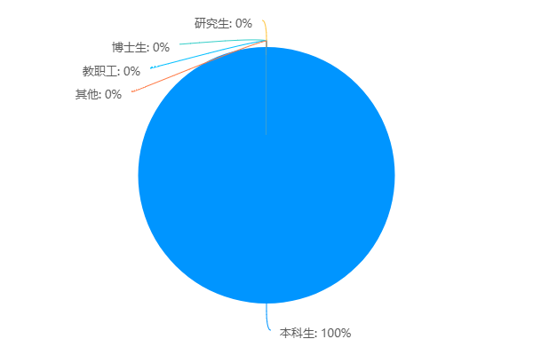
2. 您的专业（修读/任教）是:
3. 您的交通工具主要是:
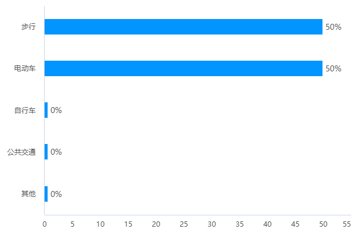
4. 您每周使用自行车/电动车的频率是:
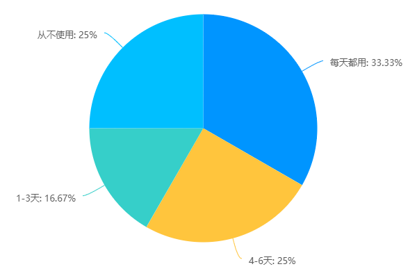
5. 您认为校园交通拥堵的情况如何?
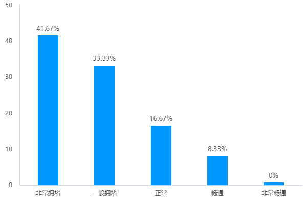
6. 您认为校园内道路拥堵时间段为（多选）:
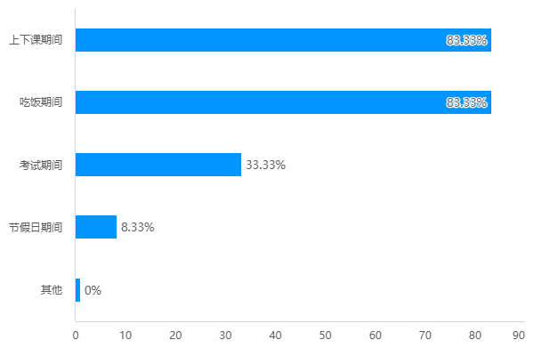
7. 您认为出现交通拥堵的地点为（多选）:
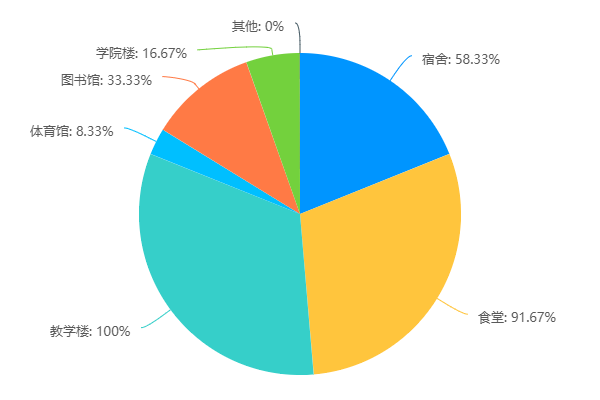
8. 您认为校园内的自行车/电动车数量是否过多:
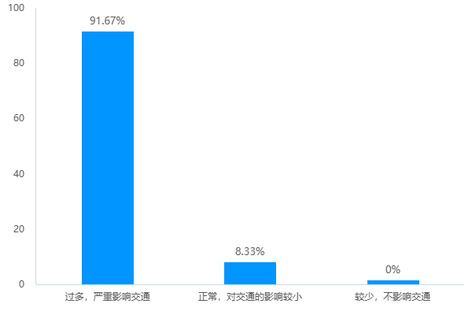
9. 您认为校园车辆停放是否合理:
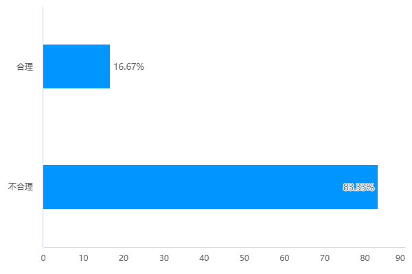
10. 如果我们开发一个APP帮助解决上述拥挤问题，您会使用吗?
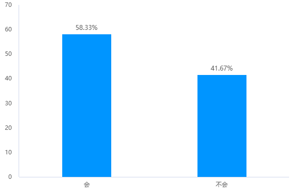
11. 您希望这个APP包含什么功能（多选）:
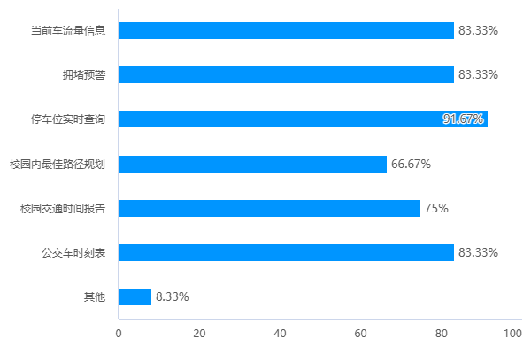
12. 您认为APP中提供哪些地图类型（多选）:
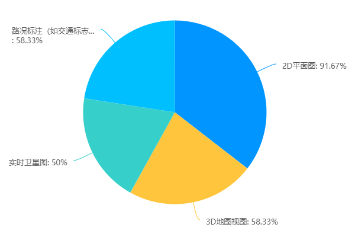
13. 您更喜欢通过哪些方式接收校园交通的相关通知:
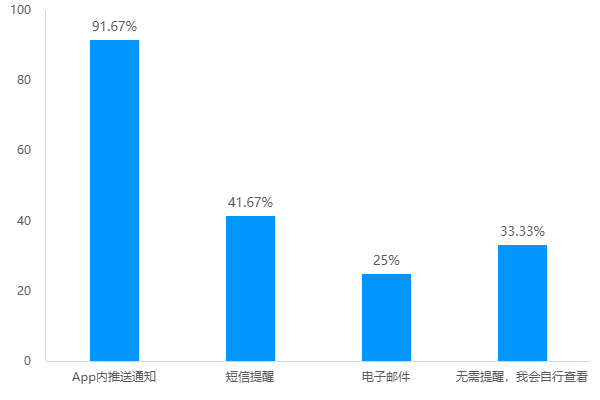
14. 您认为这款App是否应该具备社交功能:
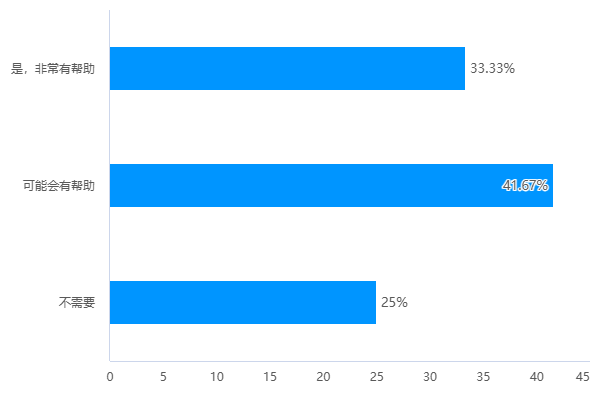
15. 您希望App内提供哪些个性化设置（多选）:
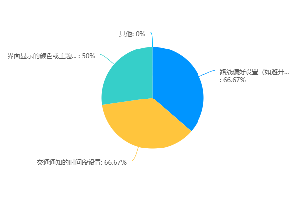
16. 您觉得在App内加入导航语音提示功能是否重要:
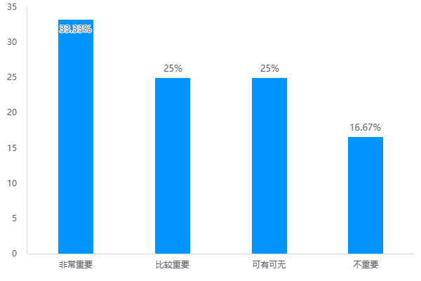
17. 您对app有什么建议:
人口统计学描述
(1)数据概述：本次调查共收集了 12 份有效问卷，样本涵盖了不同身份和专业的学生。
(2)受访者身份: 本科生： 12（100%）
(3) 专业分布: 人工智能： 5（38.5%） 计算机科学与技术： 3（23.1%） 计科： 2（15.4%） 法学： 1（7.7%） 茶学： 1（7.7%） 其他专业： 1（7.7%）
(4)交通工具主要选择: 电动车： 5（38.5%） 步行： 5（38.5%） 其他： 3（23.1%）
(5)每周使用自行车/电动车的频率: 每天都用： 5（38.5%） 4-6天： 4（30.8%） 1-3天： 3（23.1%） 从不使用： 1（7.7%）
(6)对校园交通拥堵情况的感知: 非常拥堵： 5（38.5%） 一般拥堵： 5（38.5%） 正常： 3（23.1%） 畅通： 0（0%）
(7) 拥堵时间段: 上下课期间： 10（76.9%） 吃饭期间： 8（61.5%） 考试期间： 4（30.8%） 节假日期间： 1（7.7%）
(8)拥堵地点: 宿舍： 6（46.2%） 食堂： 7（53.8%） 教学楼： 8（61.5%） 图书馆： 3（23.1%） 体育馆： 1（7.7%） 学院楼： 1（7.7%）
(9)自行车/电动车数量感知: 过多，严重影响交通： 11（84.6%） 合理或正常： 2（15.4%）
(10)车辆停放合理性: 不合理： 10（76.9%） 合理： 3（23.1%）
(11)APP 使用意愿: 会使用： 8（61.5%） 不会使用： 5（38.5%）
(12)APP 期望功能: 当前车流量信息： 8（61.5%） 拥堵预警： 7（53.8%） 停车位实时查询： 6（46.2%） 校园内最佳路径规划： 6（46.2%） 校园交通时间报告： 5（38.5%） 公交车时刻表： 5（38.5%）
(13)地图类型期望: 2D平面图： 7（53.8%） 3D地图视图： 5（38.5%） 实时卫星图： 6（46.2%） 路况标注： 4（30.8%）
(14)通知接收方式: App内推送通知： 9（69.2%） 短信提醒： 5（38.5%） 电子邮件： 4（30.8%） 无需提醒： 1（7.7%）
(15)社交功能期望: 认为需要社交功能： 9（69.2%） 认为不需要： 4（30.8%）
(16)个性化设置期望: 路线偏好设置： 7（53.8%） 交通通知的时间段设置： 6（46.2%） 界面显示的颜色或主题设置： 5（38.5%）
总结
本次调查显示，校园内交通拥堵问题较为严重，尤其是在上下课和吃饭期间。
大多数学生认为自行车和电动车的数量过多，且车辆停放不合理。
受访者普遍愿意使用相关的 APP，并希望其具备多种功能，以便更好地管理和缓解校园交通拥堵问题。